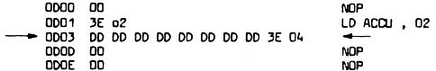

Nascom Journal |
6/80 7/80 |
Der Autor stellt die Behauptung auf, daß die Z-80 CPU nicht nur die max. 4 Byte langen Befehle (z.B. LD BC,(nn) ) auszuführen imstande ist,sondern darüberhinaus auch mehrere 10 Byte lange Befehle korrekt abarbeiten kann!!
Maschinensprachen-Insider haben die Genugtuung, sich nicht den Beweis im nächsten Nascom Journal anschauen zu müssen.
Allen anderen sei zum Trost schon vorab erklärt, daß obige Insider garantiert nicht imstande sind, dieses Wissen nutzbringend anzuwenden !
U. Krüger
Hier der Beweis:
Führen Sie das folgende Programm im Single Step aus:
Bei jedem DD-Befehlsbyte wird für die Dauer des nachfolgenden Befehls das IX- anstelle des HL-Doppelregisters intern aktiviert.Gleiches gilt sinngemäß auch für das IY Register bei einem FD-Byte.
In diesem Beispiel wird anschließend 3E 04, also LD ACCU mit 04 ausgeführt. Auch andere Befehle die nicht die Register H oder L betreffen oder mit „CB“,„ED“ beginnen,wären anschließend normal ausgeführt worden.
Nun wird auch deutlich, wie die neuen nützlichen Befehle funktionieren, die in der „Elektronik“ (14/80 S.83 und 18/80 S.24 veröffentlicht wurden.
Ansonsten acheint die Z-80 CPU noch einige weitere Geheimnisse zu bergen: Die Gesetzmäßigkeit der Befehlsfolge „ED 70“ bei verschiedenen vorausgegangenen 8 Bit arithmetischen Operationen konnte der Autor bisher noch nicht erkennen.
U.Krüger
| Seite 8 von 52 |
|---|